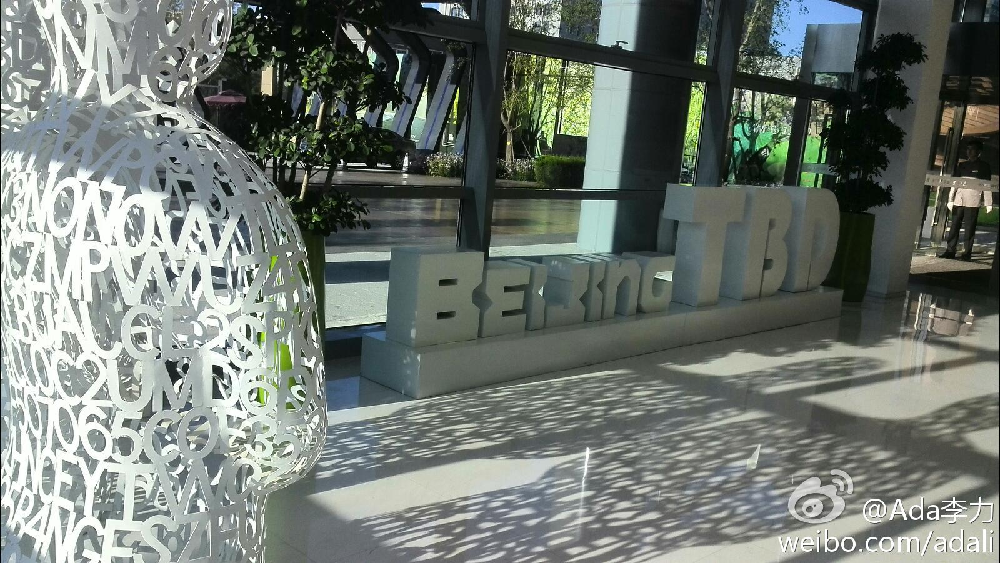
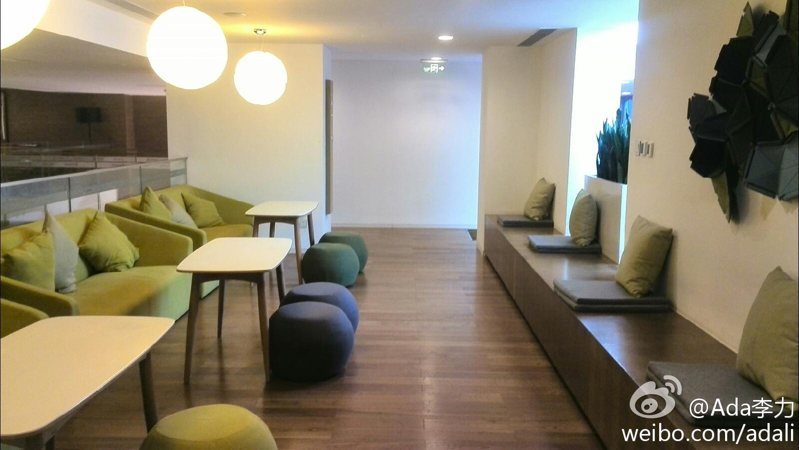
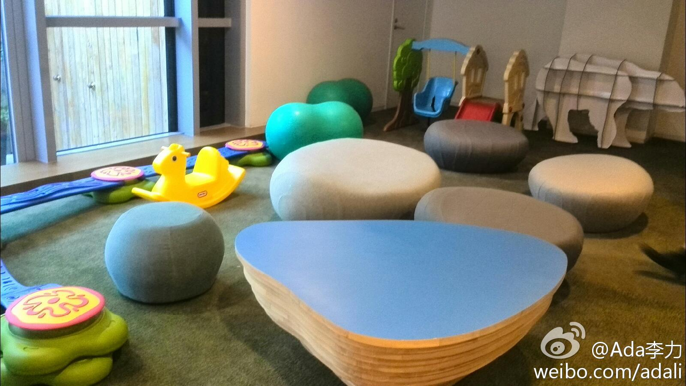
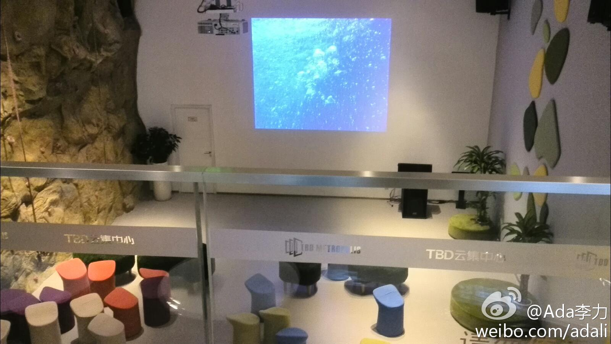
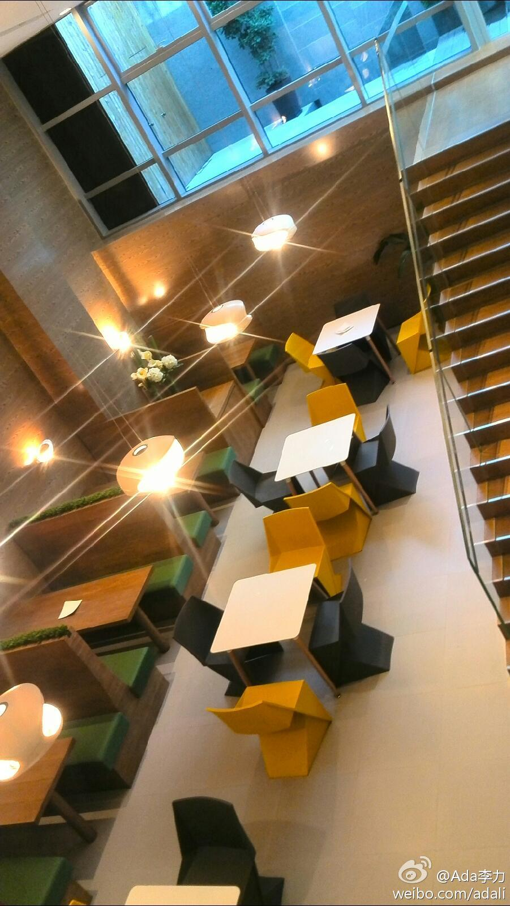
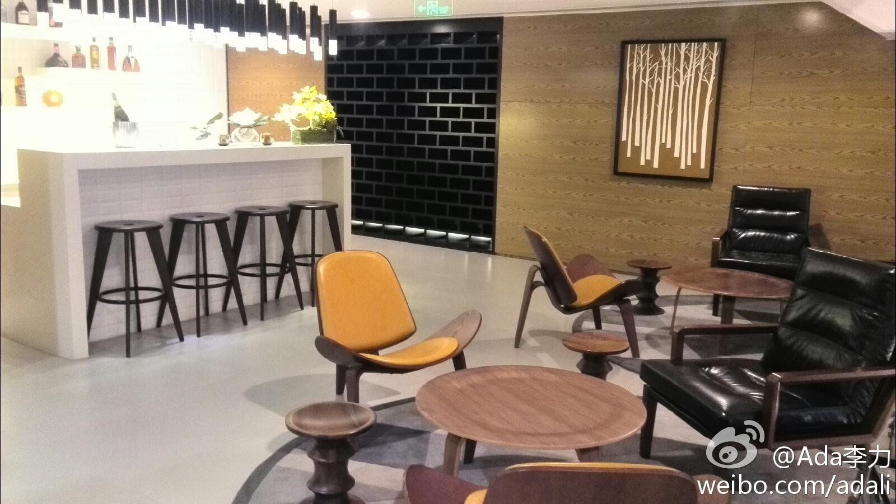
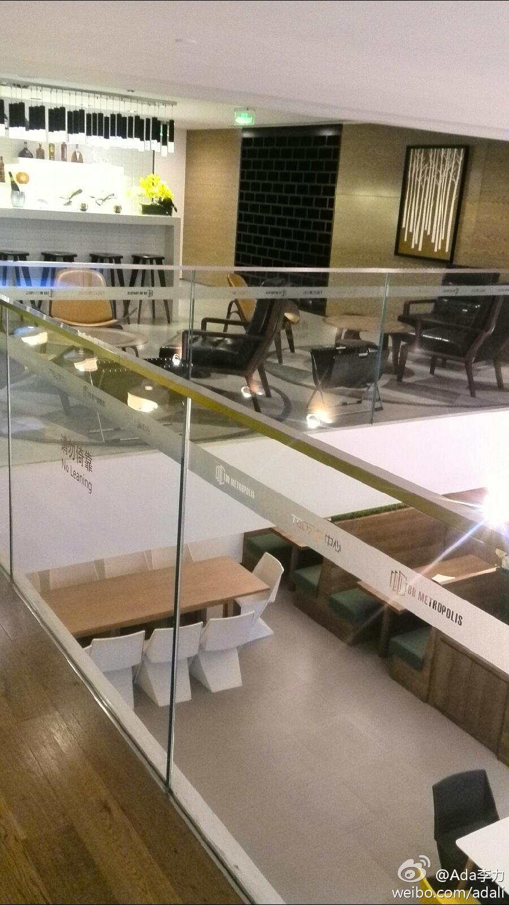
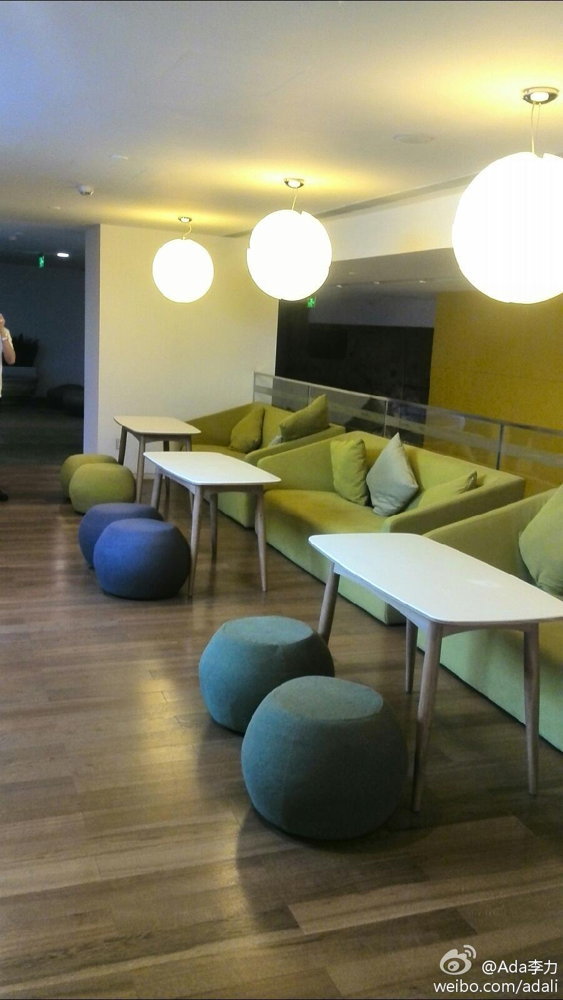
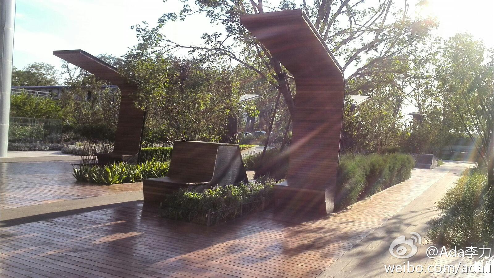
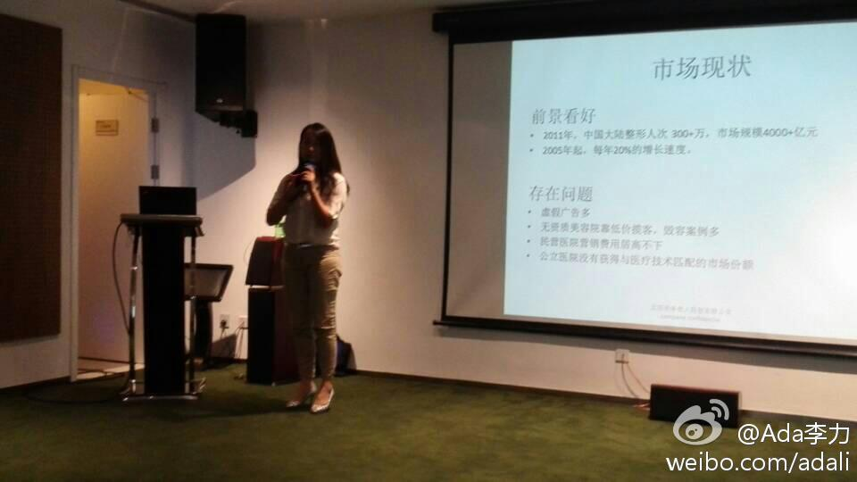

Ada李力
2014-08-26
一天都泡在了TBD云集中心，也有创业孵化服务。还在建设中，感觉更像房地产开发商，可能是看了样板间的缘故。









Ada李力
2014-08-26
今天的会不错，展示的项目很多，投资人也来了不少。中国纽约创业论坛的王胜地说他认识1500+投资人。这次又有朋友台下拍了照发给我做纪念，谢谢
@天地关爱
的冬根。

Ada李力
2014-08-26
回到家，脱鞋，换衣服，然后床上一倒，很惬意，也有种丢盔卸甲的感脚。